A gallery of static SVGs produced by fulgur-chart, covering every supported chart
type and the main features. Rendering through fulgur render embeds the
SVGs into a PDF as vectors.
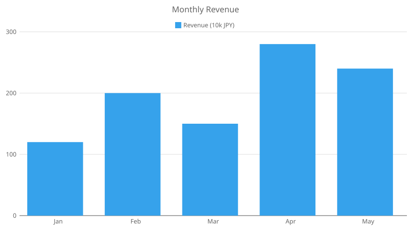
Vertical bars: monthly revenue.
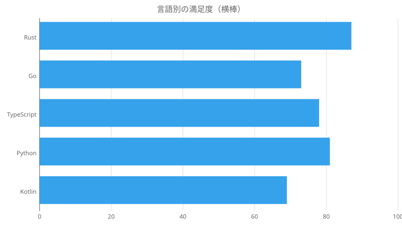
Horizontal bars via indexAxis: "y".
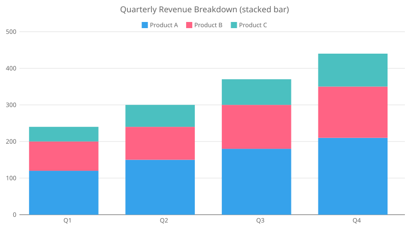
Series stacked via scales.y.stacked.
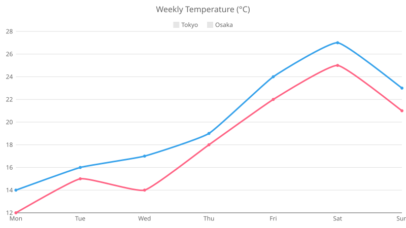
Two series, smoothed with tension.
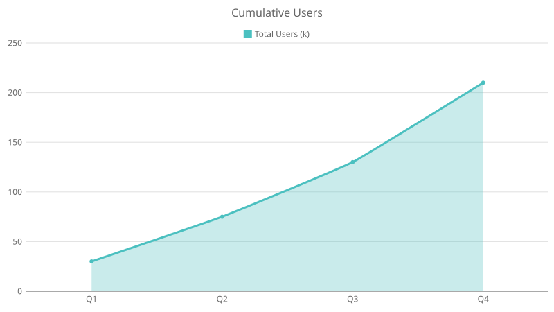
Line with "fill": true.
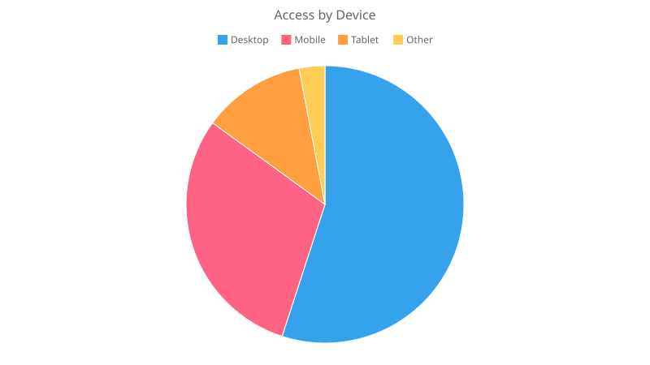
Auto-colored per slice.
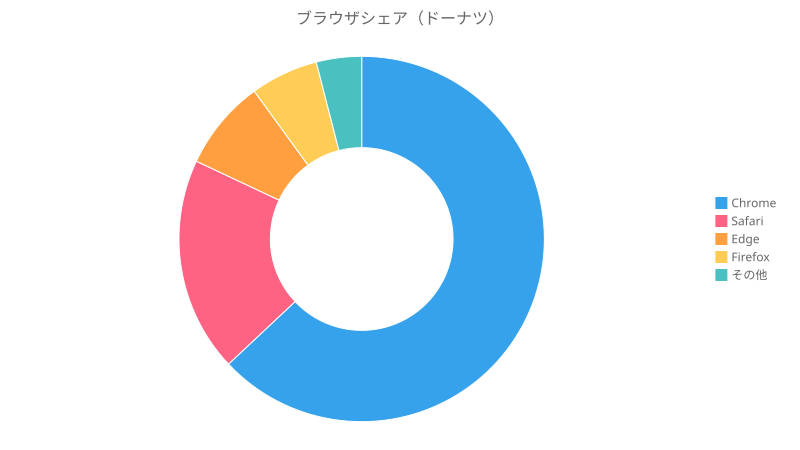
Doughnut with a right-aligned legend.
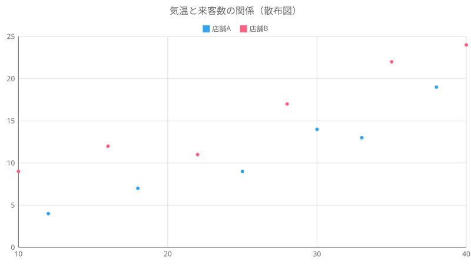
{x, y} points on linear axes.
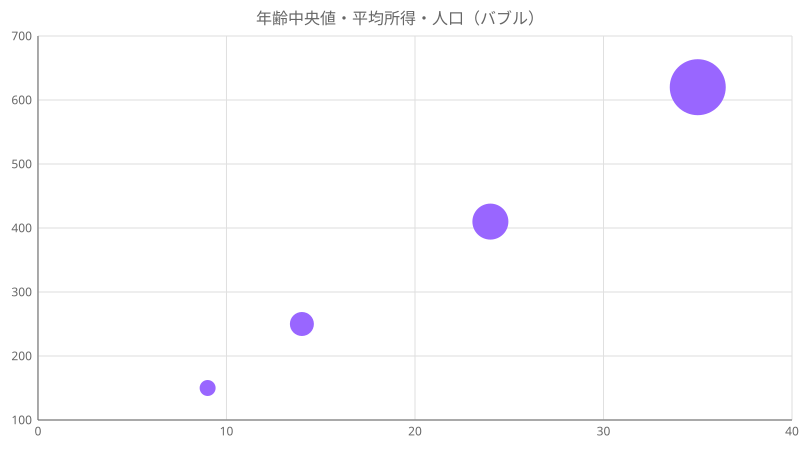
{x, y, r} — radius as a third dimension.
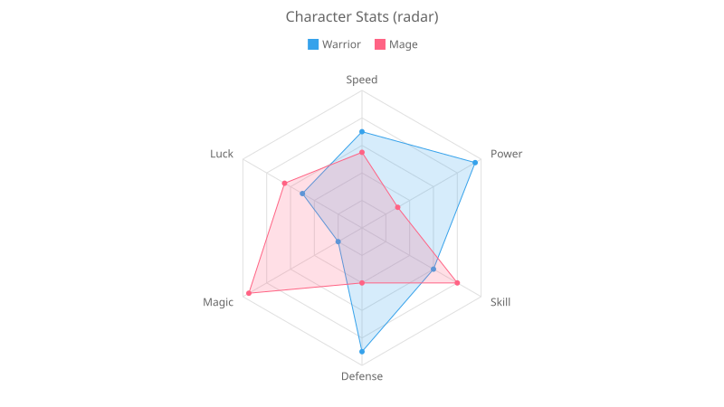
Multivariate comparison in polar coordinates.
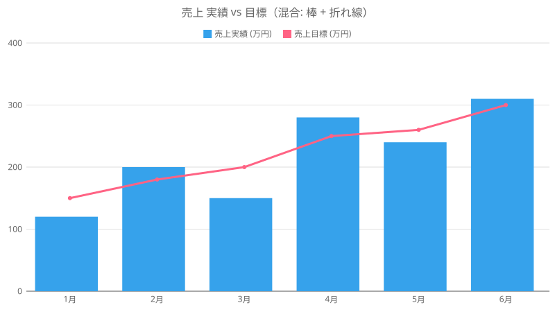
Per-dataset type: bar + line.
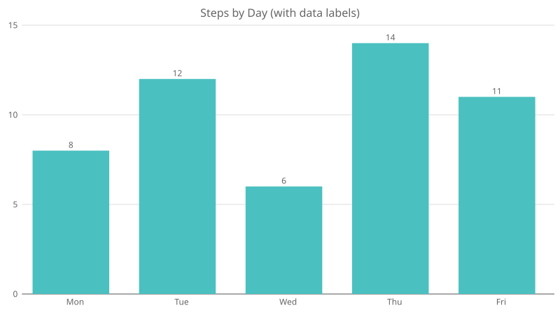
Values drawn per point via plugins.datalabels.
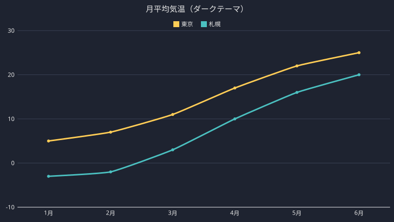
Colors overridden via options.theme.
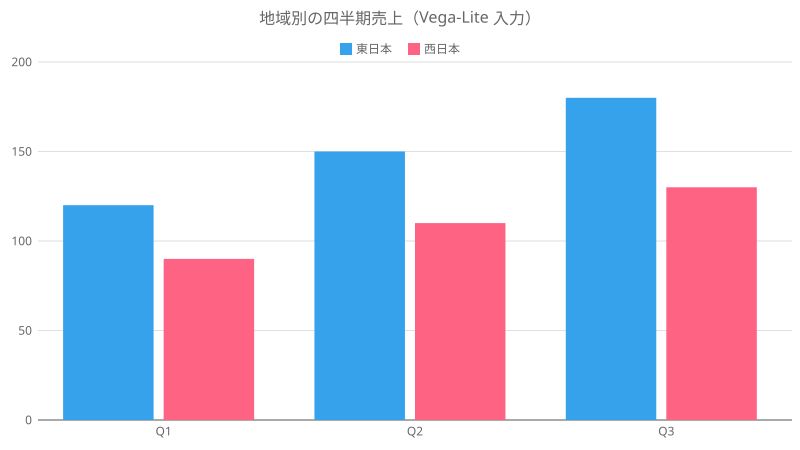
Rendered from a Vega-Lite spec (--dsl vegalite).